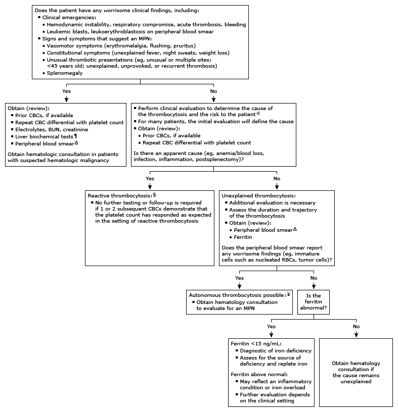

Initial evaluation of high platelet count in adults*

This algorithm is intended for use with additional UpToDate content on thrombocytosis.
MPN: myeloproliferative neoplasm; CBC: complete blood count; BUN: blood urea nitrogen; RBC: red blood cell; ALT: alanine aminotransferase; AST: aspartate aminotransferase.
* The normal reference range for the platelet count is approximately 150,000 to 450,000/microL. Interpretation of a specific abnormal result should be based upon the reference range reported with that result.
¶ Liver biochemical tests include ALT, AST, bilirubin, and albumin.
Δ Evaluation of the peripheral smear by an experienced individual may identify abnormalities not detected by automated machines. ◊ No specific platelet count per se constitutes an emergency, but we suggest evaluating a patient with a platelet count ≥1,000,000/microL within days.
§ Reactive thrombocytosis develops secondary to another disorder:
Acute blood loss or iron deficiency
Infection, inflammation, or malignancy
Postsplenectomy
Acute trauma, postsurgery
Reaction to medication, rebound thrombocytosis
¥ Autonomous thrombocytosis is due to a chronic myeloproliferative or myelodysplastic disorder. The diagnosis of reactive thrombocytosis must be excluded first.